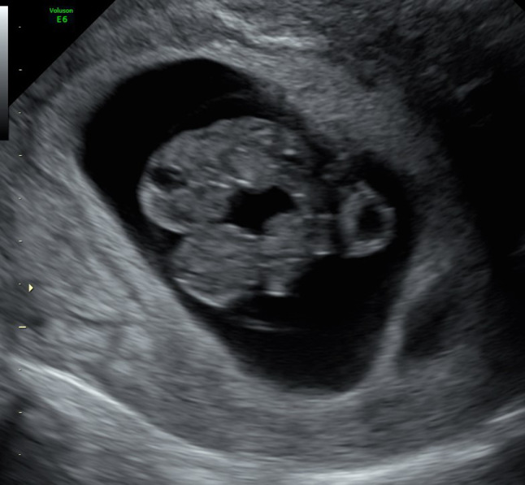
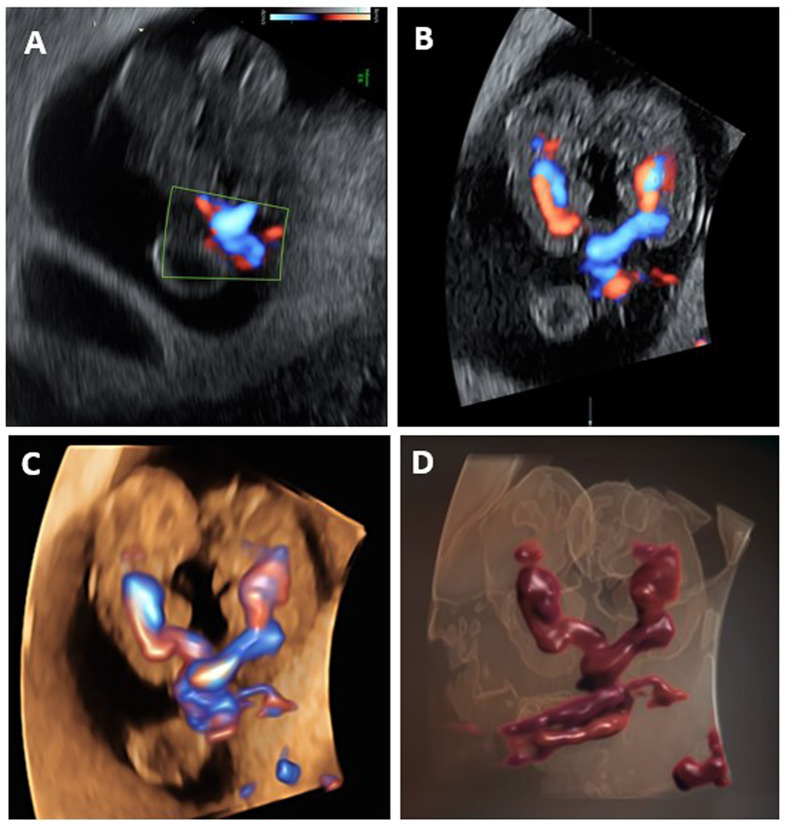
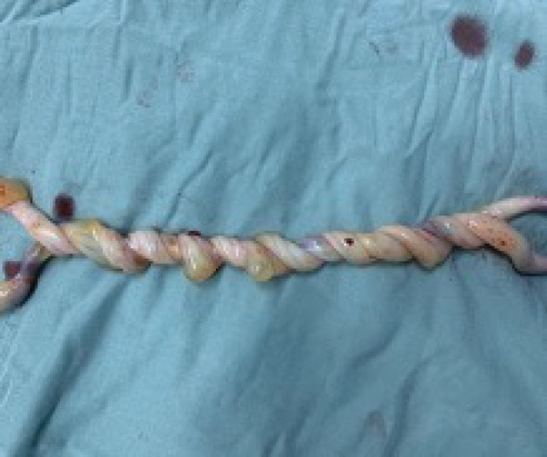
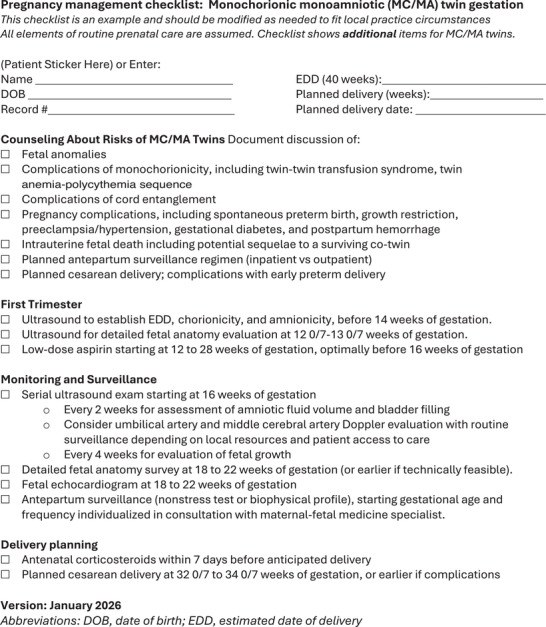

586 — Song thai một ối (MCMA): chẩn đoán, quấn dây rốn & thời điểm sinh / Monochorionic monoamniotic twins
Tags: pattern:song-thai-mot-oi pattern:quan-day-ron vung:thai-nhi vung:day-ron score:SMFM-2026 protocol:SA-thai protocol:theo-doi-MCMA
Mức chắc chắn (certainty): tổng hợp y văn (literature synthesis) — số liệu lấy từ đoàn hệ Karolinska 22 thai kỳ MCMA (PMC9836963), ca nguyên văn quấn dây 17 vòng (PMC12968075), ca chẩn đoán quấn dây ở 8,5 tuần (PMC11603871) và checklist SMFM 01/2026 (PMC13344341); ảnh minh họa từ bài có bản quyền mở, không phải ca của nhóm.
1. Tổng quan bệnh học – cơ chế hình ảnh
1.1. Vì sao thành "một ối" — mốc tách phôi quyết định tất cả
- Định nghĩa: song thai một ối (monochorionic monoamniotic, MCMA) = một bánh nhau + một buồng ối, không có vách ngăn giữa hai thai.
- Cơ chế: một trứng thụ tinh tách muộn — khoảng ngày 8–13 sau thụ tinh (bài tổng quan ghi 9–13 ngày, ca báo cáo ghi 8–12 ngày; các nguồn lệch nhau ở mốc đầu). Tách 4–8 ngày → song thai một bánh nhau hai ối (MCDA); tách > 13 ngày → dính nhau (conjoined). Vì vậy MCMA nằm giữa MCDA và thai dính nhau trên cùng một trục thời gian.
- Dịch tễ: 8/100.000 thai kỳ; ~1% tổng số song thai; ~5% song thai một bánh nhau (PMC11603871).
- Hệ quả mô học: màng ối của hai thai nằm chung một khoang, không có lớp đệm (chorion) xen giữa → không có vách để nhìn, và không có hàng rào ngăn dây rốn hai thai chạm nhau.
1.2. TẠI SAO siêu âm "không thấy vách" chưa đủ chẩn đoán — vật lý màng ối
- Vách giữa hai thai trong MCDA chỉ là hai lớp amnion áp sát, mỗi lớp rất mỏng (bậc 0,02–0,05 mm); độ phân giải trục của đầu dò âm đạo tần số cao chỉ đạt ~0,1–0,2 mm và phụ thuộc góc tới. Khi tia siêu âm song song với mặt vách, vách biến mất khỏi mặt cắt (drop-out) dù vẫn tồn tại.
- Vì vậy "không thấy vách" phải được xác nhận bằng nhiều mặt cắt trực giao + nhiều lần khám, tốt nhất trước 14 tuần; trước 10 tuần màng còn quá mỏng nên không được kết luận MCMA chỉ vì không thấy vách.
- Một túi noãn hoàng (yolk sac) hỗ trợ chẩn đoán nhưng không đáng tin một mình: hai túi noãn hoàng vẫn gặp ở tới 1/3 thai MCMA (PMC11603871).
- Dấu hiệu chắc nhất trong tam cá nguyệt I: quấn dây rốn — chỉ có thể xảy ra khi hai thai ở cùng một buồng ối.
1.3. TẠI SAO quấn dây rốn gần như luôn có — cơ học, không phải "tai nạn ngẫu nhiên"
- Hai thai chung một khoang ối, cử động tự do quanh nhau → dây rốn xoắn vào nhau. Tỷ lệ phát hiện bằng siêu âm 55–100% (PMC11603871); ca mổ lấy thai ở 32 tuần ghi nhận 17 vòng xoắn (PMC12968075).
- Vật lý Doppler giải thích dấu hiệu: tại điểm hai dây xoắn, hai dòng máu ngược chiều nhau nằm sát nhau → trên power/color Doppler thấy hai dòng đỏ–xanh xen kẽ ("whirlpool"); trên spectral Doppler lấy cùng một cửa sổ thu được hai tần số tim khác nhau (ca nguyên văn: 162 và 167 bpm) và hướng dòng ngược nhau — đây là bằng chứng chắc chắn của hai tuần hoàn riêng trong một ối.
- Quấn dây rốn là dấu hiệu nhận diện, không phải chỉ số tiên lượng: nó có thể im lặng suốt thai kỳ hoặc siết đột ngột gây suy tuần hoàn cấp; vì vậy theo dõi dựa trên nguy cơ nền của MCMA, không dựa trên "mức độ quấn" nhìn thấy.
1.4. Ngưỡng định lượng phải nhớ
- Dị tật bẩm sinh 15–25%, trong đó tim chiếm ~1/3 (PMC11603871).
- TTTS chỉ 2–4% ở MCMA — thấp hơn nhiều so với MCDA (> 10%), và khó chẩn đoán vì không có cặp đa ối/thiểu ối điển hình (hai thai chung một ối).
- Sinh trước 34 tuần: > 55% (PMC11603871). Đoàn hệ Karolinska: tuổi thai sinh trung bình 32,5 ± 1,5 tuần (PMC9836963).
- Thai lưu 30–40% tính chung; sau 24 tuần nguy cơ thai lưu 9% so với 1% ở song thai hai bánh nhau hai ối — gấp ~9 lần (PMC11603871).
- Khi một thai chết: 80% trường hợp chết cả hai; nếu thai còn sống, nguy cơ tổn thương não nặng 57% (PMC11603871).
- Đoàn hệ 22 thai kỳ được quản lý ngoại trú + mổ chủ động 32–34 tuần: sinh sống 97% sau 22 tuần, cả hai sống 77%, sẩy muộn 14%, không có tử vong sơ sinh, 1 thai lưu đơn thuần (PMC9836963) — cho thấy theo dõi có hệ thống + sinh chủ động cải thiện kết cục rất nhiều so với con số 30–70% cũ.
2. Mẫu hình + chẩn đoán phân biệt theo vị trí (gamut)
2.1. Gamut của "hai thai, KHÔNG thấy vách ngăn"
- MCMA thật: một bánh nhau, một ối, cùng giới, không vách; quấn dây rốn; một hoặc hai túi noãn hoàng.
- MCDA + một thai thiểu ối nặng ("stuck twin"): vách bị ép sát vào thai/ thành tử cung nên không nhìn thấy, nhưng vẫn tồn tại; thai còn lại thường đa ối (dấu hiệu TTTS).
- "Giả một ối" mắc phải (pseudomonoamniotic): vách đã bị rách — tự phát hoặc sau laser TTTS — hai ối thông nhau, dây rốn có thể quấn. Đây không phải MCMA bẩm sinh, nhưng nguy cơ quấn dây tương tự; một nghiên cứu sau laser gọi là iMAT (iatrogenic monoamniotic twin) (PMC10614233).
- Thai dính nhau (conjoined twins): không vách + dính phần cơ thể, chung tạng; chẩn đoán bằng hình thái, không chỉ bằng "không vách".
- Song thai hai bánh nhau hai ối (DCDA) + stuck twin: hiếm gặp hơn MCDA nhưng cùng cơ chế "vách bị ép"; phân biệt bằng dấu lambda ở tam cá nguyệt I.
2.2. Gamut biến chứng của MCMA (thứ tự tần suất – mức nguy hiểm)
- Quấn dây rốn (55–100% phát hiện trên siêu âm): nguy cơ suy tuần hoàn cấp, là nguyên nhân hàng đầu của thai lưu đột ngột.
- Sinh non (> 55% trước 34 tuần): do căng tử cung, đa ối, quấn dây, hoặc chỉ định sản khoa.
- Dị tật bẩm sinh (15–25%): tim, thành bụng, ống thần kinh; một số dị tật chỉ phát hiện sau sinh (đoàn hệ Karolinska: 4/5 ca dị tật phát hiện sau sinh).
- TTTS (2–4%) và TAPS: không có cặp đa ối/thiểu ối điển hình → chẩn đoán dựa vào chênh lệch bàng quang, Doppler, MCA-PSV.
- sIUGR / chênh cân nặng: do chia sẻ bánh nhau không đều.
- Thai lưu đơn thuần → tổn thương não thai còn lại (57%): cần MRI não thai và tư vấn.
2.3. Cách đọc có hệ thống — "nhìn 4 thứ, đừng nhìn 1"
- (1) Số buồng ối: hai thai trong một khoang, không vách ở mọi mặt cắt trực giao.
- (2) Số túi noãn hoàng: một túi gợi ý mạnh, hai túi không loại trừ.
- (3) Dây rốn: quấn dây, hai tần số tim trong cùng cửa sổ Doppler, hai vị trí cắm dây cách nhau (ca nguyên văn: 8 mm).
- (4) Giới & hình thái: cùng giới; tìm dính nhau và dị tật tim–thành bụng.
3. Bảng so sánh phân biệt (ma trận đối chiếu)
| Thực thể (entity) | Hình ảnh điển hình (US) | Chốt vào (rule-in) | Chốt loại (rule-out) | Gợi ý xác nhận |
|---|---|---|---|---|
| MCMA thật | Một bánh nhau, không vách ở mọi mặt cắt, cùng giới; quấn dây rốn; có thể 1 hoặc 2 túi noãn hoàng | Quấn dây rốn + hai tần số tim ngược chiều trong một ối; không vách trước 14 tuần | Thấy dấu lambda hoặc vách rõ ở bất kỳ mặt cắt → không phải MCMA | Khám lại 1–2 tuần; Doppler dây rốn; khám sau sinh bánh nhau |
| MCDA + stuck twin | Một thai thiểu ối nặng, thai kia đa ối; vách mờ do bị ép | Đa ối/thiểu ối lệch + bàng quang một bên căng, một bên không thấy | Quấn dây rốn không gặp trong MCDA (trừ khi vách rách) | Đo DVP, bàng quang, Doppler; theo dõi TTTS |
| Giả một ối mắc phải (sau laser/vỡ vách) | Tiền sử laser TTTS hoặc thủ thuật; vách không còn; dây quấn | Tiền sử can thiệp + mất vách đột ngột trên các lần khám trước đó có vách | Có vách nguyên vẹn ở lần khám trước → không phải bẩm sinh | So phim cũ; theo dõi như MCMA về quấn dây |
| Thai dính nhau | Không vách + dính phần cơ thể, chung tạng, cùng giới | Dính da/xương/tạng thấy rõ; không tách được hai cơ thể | Hai cơ thể tách hoàn toàn → không dính | MRI thai; siêu âm 3D; tư vấn tiên lượng |
| DCDA + stuck twin | Vách có thể bị ép mất; dấu lambda ở quý I | Lambda + hai bánh nhau ở lần khám sớm | Không có lambda, một bánh nhau → nghĩ MC | Khám lại sớm; đếm túi noãn hoàng |
3.1. Dấu hiệu chốt trong 3 giây
- Hai thai + một ối + quấn dây = MCMA cho tới khi chứng minh ngược lại.
- Quấn dây một mình không chẩn đoán MCMA nếu trước đó đã có vách (→ giả một ối mắc phải).
- Một túi noãn hoàng không phải tiêu chuẩn vàng; hai túi noãn hoàng không loại trừ MCMA.
- "Không thấy vách" ở 8 tuần là bình thường — đừng chốt trước 10–14 tuần.
4. Protocol chụp + hệ phân độ/điểm chuẩn hóa
4.1. Chẩn đoán & theo dõi theo SMFM 01/2026 (PMC13344341)
| Thời điểm | Việc phải làm | Ngưỡng / chi tiết |
|---|---|---|
| Quý I, < 14 tuần | Xác định số bánh nhau, số ối, số túi noãn hoàng, giới | Nếu chưa rõ → khám lại sau 1–2 tuần, chốt trước 14 tuần |
| 12–13+6 tuần | Siêu âm hình thái sớm | Đo CRL, NT, tìm dị tật lớn |
| 18–22 tuần | Hình thái chi tiết + siêu âm tim thai | Bắt buộc vì dị tật tim ~1/3 |
| Từ 16 tuần | Siêu âm mỗi 2 tuần: nước ối (AFV/DVP), bàng quang | Phát hiện TTTS/TAPS dù không có cặp đa–thiểu ối điển hình |
| Mỗi 4 tuần | Đo sinh trắc, ước cân nặng, Doppler rốn/MCA khi cần | Phát hiện sIUGR, chênh cân nặng |
| 12–28 tuần | Aspirin liều thấp (thường 81 mg), tốt nhất < 16 tuần | Giảm tiền sản giật; không phải để điều trị TTTS |
| Trước sinh 7 ngày | Corticosteroid | SMFM: dùng trong vòng 7 ngày trước sinh dự kiến |
| 32+0 – 34+0 tuần | Mổ lấy thai chủ động | Ngưỡng SMFM 2026; đoàn hệ Karolinska sinh trung bình 32,5 tuần |
- Nội trú hay ngoại trú? Không có RCT đủ mạnh. Phân tích gộp của Saccone gợi ý nội trú có thể giảm thai lưu nhưng không kết luận; đoàn hệ Karolinska quản lý ngoại trú vẫn đạt sinh sống 97% sau 22 tuần. Quyết định theo khả năng tiếp cận theo dõi và nguy cơ cá nhân.
- Theo dõi tim thai: từ khi thai đủ lớn, NST/CTG theo lịch; tăng tần suất khi có quấn dây dày, đa ối, hoặc mẹ giảm cử động thai.
- Corticosteroid + magnesium sulfate khi có nguy cơ sinh < 32 tuần (bảo vệ thần kinh thai).
4.2. Flowchart quản lý MCMA
flowchart TD
A[Hai thai trong mot buong oi] --> B{Co quan day ron hoac mot tui noan hoang}
B -->|Co| C[Chan doan MCMA]
B -->|Khong| D[Kham lai sau 1-2 tuan truoc 14 tuan]
D --> E{Van khong thay vach}
E -->|Co| C
E -->|Khong| F[MCDA hoac DCDA - theo lich song thai tuong ung]
C --> G[SiEU AM 16 tuan: moi 2 tuan nuoc oi va bang quang]
G --> H[18-22 tuan: hinh thai chi tiet va sieu am tim thai]
H --> I[Doi chieu 4 tuan: sinh trac va Doppler]
I --> J{Co TTTS, sIUGR, bat thuong Doppler}
J -->|Co| K[Hoi chan y te - can nhac can thiep]
J -->|Khong| L[32+0 den 34+0 tuan: mo lay thai chu dong]
K --> L
L --> M[Corticosteroid trong 7 ngay truoc sinh]
Ghi chú: MCMA không có hệ RADS riêng; bảng trên là khuyến cáo SMFM 01/2026, đối chiếu đoàn hệ Karolinska và tổng quan BMC 2024.
5. Biến thể bình thường và cạm bẫy
- Vách "biến mất" do góc tới: luôn quét hai mặt phẳng trực giao, đổi tư thế mẹ, khám lại — đừng chốt MCMA trên một mặt cắt.
- Hai túi noãn hoàng ở MCMA (tới 1/3): đây là biến thể, không phải bằng chứng loại trừ.
- Chẩn đoán quá sớm (< 10 tuần): màng ối quá mỏng; dễ nhầm MCDA thành MCMA → hậu quả là theo dõi quá mức, mổ quá sớm.
- Nhầm "giả một ối" sau laser thành MCMA bẩm sinh: tiền sử thủ thuật là chìa khóa; quản lý giống nhau về quấn dây nhưng khác về nguy cơ PPROM, chorioamnionitis.
- Đánh giá "mức độ quấn" để quyết định sinh: không có ngưỡng số vòng; 17 vòng vẫn sống tốt (PMC12968075), trong khi quấn ít có thể siết cấp. Không dùng số vòng làm chỉ định sinh.
- Bỏ sót TTTS vì "không có đa ối/thiểu ối": ở MCMA, TTTS biểu hiện bằng chênh bàng quang, chênh Doppler, MCA-PSV, không phải cặp DVP kinh điển.
- Thai lưu một bên: nguy cơ tổn thương não thai còn lại 57% → MRI não thai và tư vấn, không chỉ theo dõi tim thai.
- Mổ lấy thai không loại bỏ mọi nguy cơ: thai lưu có thể xảy ra trước mổ; vì vậy theo dõi vẫn là trụ cột.
6. Tự lượng giá — Blind Quiz
Ca 1 — Thai 8,5 tuần, hai thai trong một buồng ối, chỉ thấy một túi noãn hoàng. Đọc ảnh trước, mô tả sau.

- Gợi ý lâm sàng: thai kỳ sau chuyển phôi, khám vì đau nhẹ; không ra máu.
- Câu hỏi: (1) Có thể chốt MCMA ngay không? (2) Một túi noãn hoàng có đủ không? (3) Cần làm gì tiếp theo?
Bấm để hiện đáp án (findings + chẩn đoán)
- Findings: hai phôi trong một khoang ối, một túi noãn hoàng; CRL 20 và 21 mm (tương ứng 8,4 và 8,5 tuần).
- Chẩn đoán: nghi MCMA — nhưng ở 8,5 tuần chưa đủ chốt vì màng ối rất mỏng; cần quấn dây rốn hoặc khám lại sau 1–2 tuần.
- Không dùng một túi noãn hoàng làm tiêu chuẩn duy nhất: hai túi noãn hoàng vẫn gặp ở tới 1/3 MCMA.
- Nguồn ảnh: Liberty G et al., BMC Pregnancy Childbirth 2024 (PMC11603871), CC BY-NC-ND 4.0 — giữ nguyên, không cắt/ghép.
Ca 2 — Cùng thai kỳ, bật power Doppler tại điểm hai dây rốn gặp nhau.

- Câu hỏi: Dấu hiệu nào chứng minh hai tuần hoàn riêng? Spectral Doppler sẽ thấy gì?
Bấm để hiện đáp án
- Findings: power Doppler 2D/3D cho thấy điểm quấn và hai dòng chảy ngược chiều; 3D HD hiển thị hai vòng tuần hoàn riêng.
- Spectral Doppler: hai tần số tim khác nhau (162 và 167 bpm trong ca này) và hướng dòng ngược nhau tại cùng cửa sổ — bằng chứng chắc chắn của hai thai trong một ối.
- Ý nghĩa: quấn dây rốn xác nhận amnionicity một ối, nhưng không dự báo mức độ nguy hiểm.
- Nguồn ảnh: Liberty G et al., BMC Pregnancy Childbirth 2024 (PMC11603871), CC BY-NC-ND 4.0 — giữ nguyên, không cắt/ghép.
Ca 3 — Mổ lấy thai 32 tuần vì MCMA; bánh nhau và dây rốn sau sinh.

- Gợi ý lâm sàng: thai kỳ MCMA, theo dõi ngoại trú đến 31 tuần rồi nhập viện; NST hằng ngày bình thường.
- Câu hỏi: (1) Đây là tổn thương gì? (2) Có phải nguyên nhân tử vong không? (3) Bài học quản lý?
Bấm để hiện đáp án
- Findings: hai dây rốn xoắn chặt vào nhau, đếm được 17 vòng; không có nút thắt thật, không huyết khối đại thể.
- Chẩn đoán: quấn dây rốn (umbilical cord entanglement) — gần như phổ biến ở MCMA; đây là dấu hiệu của một ối, không phải chỉ số tiên lượng.
- Kết cục ca này: hai bé sống, Apgar 8/9, chỉ cần CPAP ngắn — cho thấy số vòng không quyết định kết cục.
- Bài học: theo dõi sát + sinh chủ động 32–34 tuần; không dùng "mức độ quấn" để quyết định mổ sớm hơn.
- Nguồn ảnh: Alagha M et al., Case Rep Obstet Gynecol 2026 (PMC12968075), CC BY 4.0.
Ca 4 — Đọc checklist quản lý MCMA của SMFM 01/2026.

- Câu hỏi: Lịch siêu âm nào bắt buộc? Khi nào dùng corticosteroid? Mổ lấy thai ở tuổi thai nào?
Bấm để hiện đáp án
- Theo dõi: siêu âm từ 16 tuần, mỗi 2 tuần (nước ối, bàng quang); mỗi 4 tuần đánh giá sinh trắc; hình thái chi tiết 18–22 tuần; siêu âm tim thai 18–22 tuần.
- Aspirin liều thấp 12–28 tuần, tốt nhất trước 16 tuần.
- Corticosteroid trong vòng 7 ngày trước sinh dự kiến; mổ lấy thai 32+0 – 34+0 tuần.
- Lưu ý: checklist ghi rõ đây là mẫu để chỉnh theo thực hành địa phương, không phải phác đồ cứng.
- Nguồn ảnh: SMFM (Yao R et al.), Pregnancy 2026 (PMC13344341), CC BY-NC 4.0.
Bài liên quan chéo
- 500 – Tổng quan Hệ Vú & Sản Phụ khoa
- 566 – Song thai: chorionicity, TTTS & TAPS (nền tảng MC/DC, Quintero, TAPS)
- 569 – Sinh non ở song thai: sàng lọc cổ tử cung & dự phòng (ngưỡng CL, progesterone, bán khâu)
- 568 – TRAP & thai acardiac (song thai MC nguy cơ cao khác)
- 573 – Hở cổ tử cung & bán khâu
- 565 – Sàng lọc hình thái thai & Doppler sản khoa
Không dùng để chẩn đoán độc lập khi chưa có người hướng dẫn.